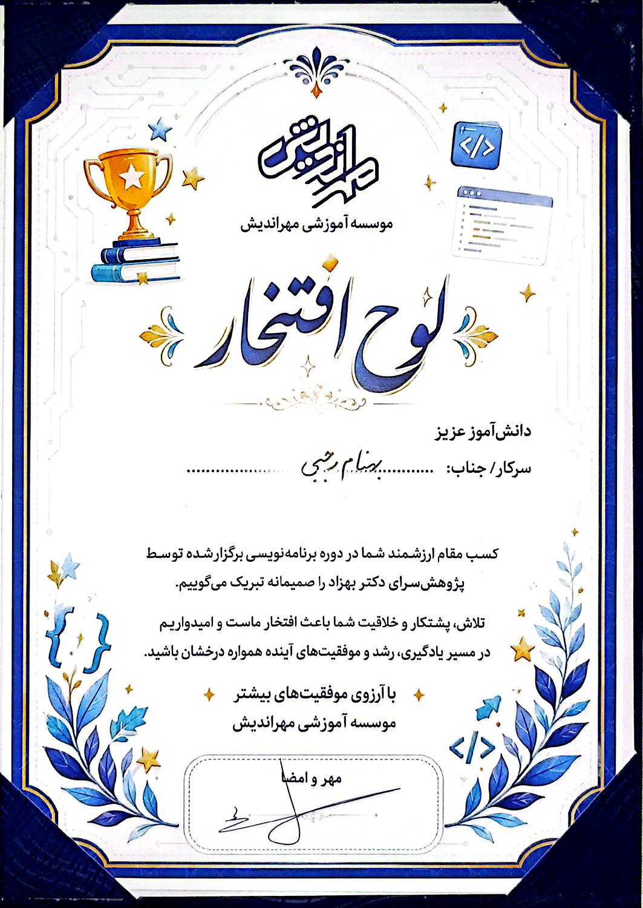

<developer />
TACHYON
Behnam Rajabi
برنامهنویس · سازنده اپلیکیشن · توسعهدهنده بازی
نرمافزار، اپلیکیشن، وبسایت و بازی میسازم.
من کی هستم؟
من بهنام رجبی هستم و با نام Tachyon فعالیت میکنم.
۱۵ سالهام و تمرکزم روی برنامهنویسی، ساخت پروژههای واقعی و یادگیری پروژهمحور است.
روی اپلیکیشنها، وبسایتها و نرمافزار کار میکنم و در کنار آن، مسیر بازیسازی را هم دنبال میکنم. در Unity و بازیسازی در حال پیشرفت هستم و هنوز خودم را حرفهای نمیدانم؛ برای من، هر پروژه بخشی از مسیر یادگیری و تجربه عملی است.
همزمان روی چند پروژه شخصی و کاری کار میکنم. دو نمونه از پروژههای شخصیام در این سایت قرار گرفتهاند، اما بهدلیل محدودیتهای کاری امکان نمایش پروژههای کاری را ندارم.
همین وبسایت نیز یکی از نمونههای ساخت من است؛ از طراحی و پیادهسازی رابط تا آمادهسازی ساختار پروژه و محتوای آن.
بخش زیادی از چیزهایی که یاد میگیرم پروژهمحور است؛ بهجای اینکه فقط یک فناوری را مطالعه کنم، سعی میکنم با آن چیزی واقعی بسازم و در عمل بهتر شوم.
چه میسازم؟
اپلیکیشنها
وبسایتها
نرمافزار
بازیها
فناوریها
- Python●
- Dart●
- Flutter●
- HTML●
- CSS●
- JavaScript●
- Godot●
- Unity●
- توسعه با کمک هوش مصنوعی●
پروژههای منتخب
پروژهها در حال اضافه شدن هستند؛ بهزودی دوباره سر بزنید.
پژوهش و مسابقات
پژوهشسرای دکتر بهزاد
صعود به مرحله کشوری مسابقات پژوهشی
پروژهای را با Python ساختم که در آن بازیکن با حرکت واقعی بدن در دنیای واقعی، شخصیت داخل بازی را حرکت میدهد. با این پروژه توانستم از مرحله ناحیهای و سپس استانی عبور کنم و به مرحله کشوری برسم. اکنون پروژه در مرحله داوری کشوری قرار دارد و منتظر اعلام نتیجه داوران هستم.

تقدیرنامه
تجربه
پروژههای شخصی
ساخت و توسعه پروژههای شخصی مختلف در حوزه نرمافزار و اپلیکیشن.
پروژههای کاری
کار همزمان روی پروژههای حرفهای و شخصی.
آموزش Python
بهعنوان کمکاستاد در آموزشگاه Python در آموزش برنامهنویسی و همراهی هنرجوها با مباحث کدنویسی فعالیت داشتهام.
رزومه
پروفایل
بهنام رجبی (Tachyon) — برنامهنویس و سازنده پروژههای نرمافزاری با تمرکز بر یادگیری پروژهمحور و ساخت محصولات واقعی. در Unity و بازیسازی در حال پیشرفت هستم و هنوز حرفهای نیستم.
مهارتها
Python, Dart, Flutter, HTML, CSS, JavaScript, Godot, Unity و توسعه با کمک هوش مصنوعی.
تجربه
پروژههای شخصی و کاری متعدد؛ دو نمونه شخصی در این سایت نمایش داده شدهاند. پروژههای کاری به دلیل محدودیتهای کاری قابل نمایش نیستند.
آموزش
فعالیت بهعنوان کمکاستاد در آموزشگاه Python و همراهی هنرجوها در یادگیری برنامهنویسی.
پژوهش و مسابقات
ساخت پروژهای با Python که حرکت واقعی بدن را به حرکت شخصیت داخل بازی تبدیل میکند؛ عبور از مراحل ناحیهای و استانی و صعود به مرحله کشوری.
نمونهکار
این وبسایت نیز یکی از نمونههای ساخت من است. برای نمونههای دیگر، بخش پروژهها را ببینید.
ساختن > حرف زدن
بیشتر از طریق ساختن یاد میگیرم. مطالعه درباره یک فناوری فقط تا حدی پیش میرود؛ وقتی آن را برای ساختن چیزی واقعی به کار میبرم، واقعاً درکش میکنم.
بیایید چیزی بسازیم
Behnam Rajabi
Tachyon
- ایمیلtachy1272@gmail.com
- گیتهابهنوز وجود ندارد
- تلگرام@itsTachyon0
- پورتفولیوهمین سایت
© Behnam Rajabi / Tachyon